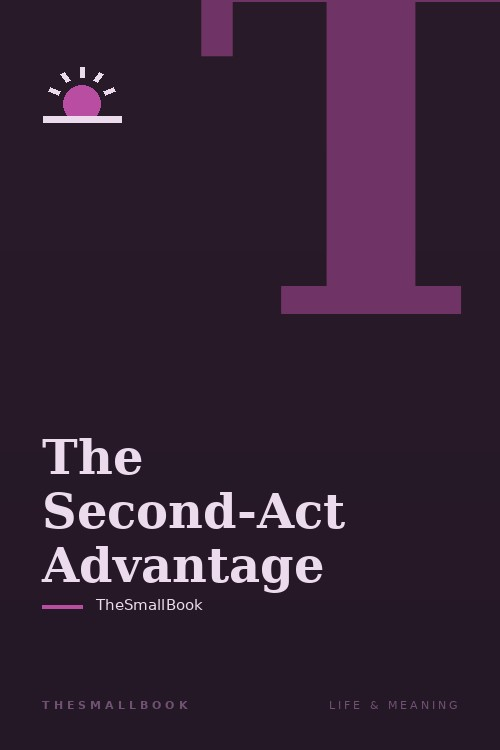

Library › Life & Meaning
The Second-Act Advantage - Summary & Key Lessons

A TSB Original on starting again at forty, fifty, sixty, and winning.
📖 OPEN THE FULL INTERACTIVE BREAKDOWN →🌐 Read it in Hindi, Hinglish, Gujarati, Tamil & 22 more languages, with audio.
💡 The Big Idea
This TSB Original is a field manual for the restart: the career change at forty five, the business begun at fifty two, the degree finished at sixty. It argues that late starters hold four unfair assets, pattern recognition, a real network, earned credibility and scar tissue that prices risk correctly, and lose only if they compete on the young person's terms: speed, hunger theatre and cheap hours. Seven moves structure the book, from auditing the first act's assets to designing the ninety day proof.
🧠 The 8 Key Lessons
Lesson 1: The Asset Audit the Young Cannot Fake
One: What the First Act Actually Bought You
Second acts fail when they start from the deficit story: outdated skills, less energy, missed boats. This opening move inventories the assets that only time issues: pattern recognition across cycles, a network that answers your calls, credibility that opens rooms, and judgement about which fires are real. None of these fit on a resume line, so restarters undervalue exactly what employers and markets pay premiums for. The audit is done on paper, with names, dates and evidence, because vague confidence evaporates at the first rejection.
📖 Example: A fifty one year old logistics manager, laid off and certain she was finished, listed twenty years of supplier relationships and three factory rescues. Within a month a former vendor hired her to do for five factories what she had done for one. The assets were never missing; the inventory was. Read the full example →
⚡ Do this: Write your asset audit tonight: ten patterns you can spot early, ten people who take your call, five rescues you have performed. Keep it where interviews can see it.
Lesson 2: Do Not Compete on Their Track
Two: Positioning the Second Act
The restart error is entering the young person's race: cheapest, fastest, most available. The second act wins on the opposite terms, most trusted, wisest about consequences, connected where it counts. This chapter teaches positioning as a translation exercise: every decade of your past becomes a sentence about the future it lets you protect or accelerate for someone else. Markets pay for avoided disasters at rates they never pay for effort, and only veterans can sell avoidance credibly.
📖 Example: A forty eight year old accountant stopped applying for jobs against twenty five year olds and began offering fraud cleanups to small firms burned once already. Her grey hair closed sales that her spreadsheet never could. She doubled her old salary in eighteen months, part time. Read the full example →
⚡ Do this: Write your translation sentence: because I have seen X three times, I can protect you from Y. Say it to one prospect this week.
Lesson 3: The Ninety Day Proof
Three: Momentum Before Identity
Second acts die in the planning year. The manual's rule: ninety days to a visible proof, a paid pilot, a finished portfolio piece, a first cohort taught, before any announcement of a new identity. Proof creates its own confidence and its own information: the market's response to a real offer teaches more than a year of courses. The chapter sizes the proof small enough to survive a job and family, and public enough to recruit allies and early customers.
📖 Example: A fifty six year old teacher dreaming of a bakery ran four Saturday pop ups before resigning anything. The fourth sold out, a cafe owner offered shelf space, and the dream acquired data. Her notice, when it came, was a formality the numbers had already signed. Read the full example →
⚡ Do this: Define your ninety day proof today: one offer, one audience, one date. Tell two people the date so it costs something to miss.
Lesson 4: Energy Is Managed, Not Found
Four: The Physiology of Starting Again
The restart literature aimed at fifty year olds lies about energy: you do not need a twenty five year old's stamina, you need a veteran's scheduling. This chapter covers the unglamorous levers, sleep defended like medication, strength training as cognitive insurance, work in ninety minute campaigns with real endings, and the ruthless pruning of obligations that belonged to the first act's politics. Energy, managed this way, routinely beats the young rival's chaotic abundance.
📖 Example: A consultant who restarted at fifty three scheduled client work in three morning campaigns and stopped apologising for afternoons spent walking and reading. Revenue rose, because the campaigns were terrifyingly focused, and his evening temper, his family reports, became unrecognisable. Read the full example →
⚡ Do this: Redesign next week as three daily campaigns with hard endings. Defend sleep like a client meeting for seven nights and measure your mornings.
Lesson 5: The Network You Already Have Is the Market
Five: Compounding Relationships
Restarters network like beginners, cold messages and conferences, while sitting on twenty years of warm relationships gone quiet. This chapter runs the reactivation play: the honest update message, the small useful gift of information, the ask made specific and easy. It also teaches the second act's etiquette: your network owes you nothing and will give you everything, in that order, provided you bring news and usefulness rather than nostalgia and need.
📖 Example: A laid off editor sent thirty former colleagues one message: what she was building, one article of theirs she had genuinely used, one small offer of help. Eleven replies, four coffees, two contracts. The network had been waiting for a reason to be a network again. Read the full example →
⚡ Do this: Send five reactivation messages this week: honest update, genuine appreciation, one small specific offer. Track replies like sales data.
Lesson 6: Money: Runway, Bridges and the Dignity Budget
One: Finance the Crossing
The manual treats money plainly: calculate the real monthly floor, build the longest runway the first act can fund, and find bridge income that pays without consuming the new thing's hours. It introduces the dignity budget, the lines you will not cut because a miserable restart quits early, and the vanity lines that can go without a tear. Marriages survive second acts when this chapter is done together, in spreadsheets, before the leap.
📖 Example: A couple priced his transition to landscape design at fourteen months: six of savings, eight bridged by two days a week of his old estimating work. The bridge bored him and saved everything. He resigned the bridge in month nine, ahead of schedule, because the plan had removed panic from his pricing. Read the full example →
⚡ Do this: Do the crossing maths this weekend: floor, runway months, bridge options, dignity lines. One page, shared with whoever shares your bills.
Lesson 7: Identity Lag Is Normal; Dress for the New Part Anyway
Seven: Becoming
The last chapter addresses the impostor weather of second acts: you will feel like a beginner wearing a veteran's face, because you are both. The manual normalises the lag, identity trails evidence by about a year, and prescribes the interim disciplines: collect the evidence file, borrow confidence from the proof, and let the calendar work. It ends with the book's thesis restated as an instruction: the second act is not a comeback, because you never left; it is the first act the experience was for.
📖 Example: A woman who opened her clinic at fifty eight kept a folder of patient thank yous against the evenings she felt like a fraud. By the second year she rarely opened it. The folder is now given, as an assignment, to every younger colleague she mentors through their own lag. Read the full example →
⚡ Do this: Start your evidence file today: proofs, thanks, results, one page minimum. Read it on the evenings the impostor weather rolls in.
Lesson 8: The Portfolio Self: Three Small Bets Beat One Big Leap
The Advantage
The second act rarely arrives as a single leap; it assembles from portfolio bets, a consulting day a week, a course taught, a small product, a board seat, run in parallel until the evidence picks the winner. Your advantage over the young is that you can afford experiments they must bet rent on, and you know which rooms matter. The discipline is to keep each bet small, time boxed and reviewed, so the portfolio learns faster than your courage drains.
📖 Example: The executives who land best in the handbook's cases ran three bets for two quarters, then doubled the one with paying strangers. The ones who stalled announced one grand reinvention, told everyone, and then had to defend the announcement instead of testing the idea. Read the full example →
⚡ Do this: List three bets you could start within a month at under five hours a week each. Start the cheapest this week and schedule its ninety day review now.
✅ 5-Step Action Plan
- Write the asset audit: patterns, people, rescues, tonight.
- Craft your translation sentence and say it to a prospect.
- Set the ninety day proof with a public date.
- Rebuild next week as three campaigns; defend sleep seven nights.
- Send five reactivation messages this week.
- Do the crossing maths on one shared page.
- Start the evidence file and stock it weekly.
⚠️ When This Doesn't Work
A TSB Original: our studio's synthesis of restart research and coached cases. Individual results vary with health, markets and luck; the finance chapter is planning guidance, not financial advice.
💀 The Graveyard Proves It
💬 Best Quotes from The Second-Act Advantage
- “Youth is a head start. Experience is a shorter route.”
- “You are not behind. You are loaded.”
- “The second act does not need your younger self's permission.”
Interactive version: mark lessons as read, listen in your language, share quote cards.